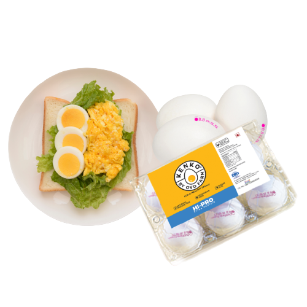
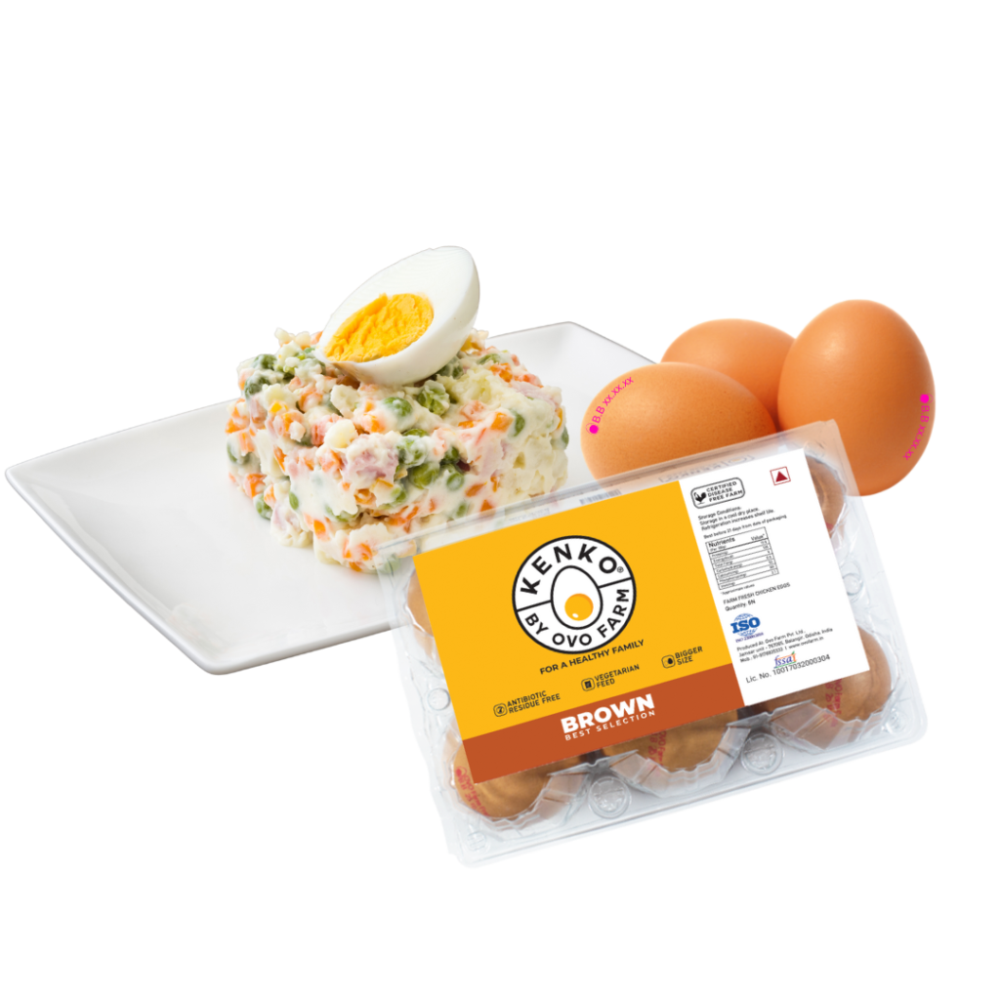
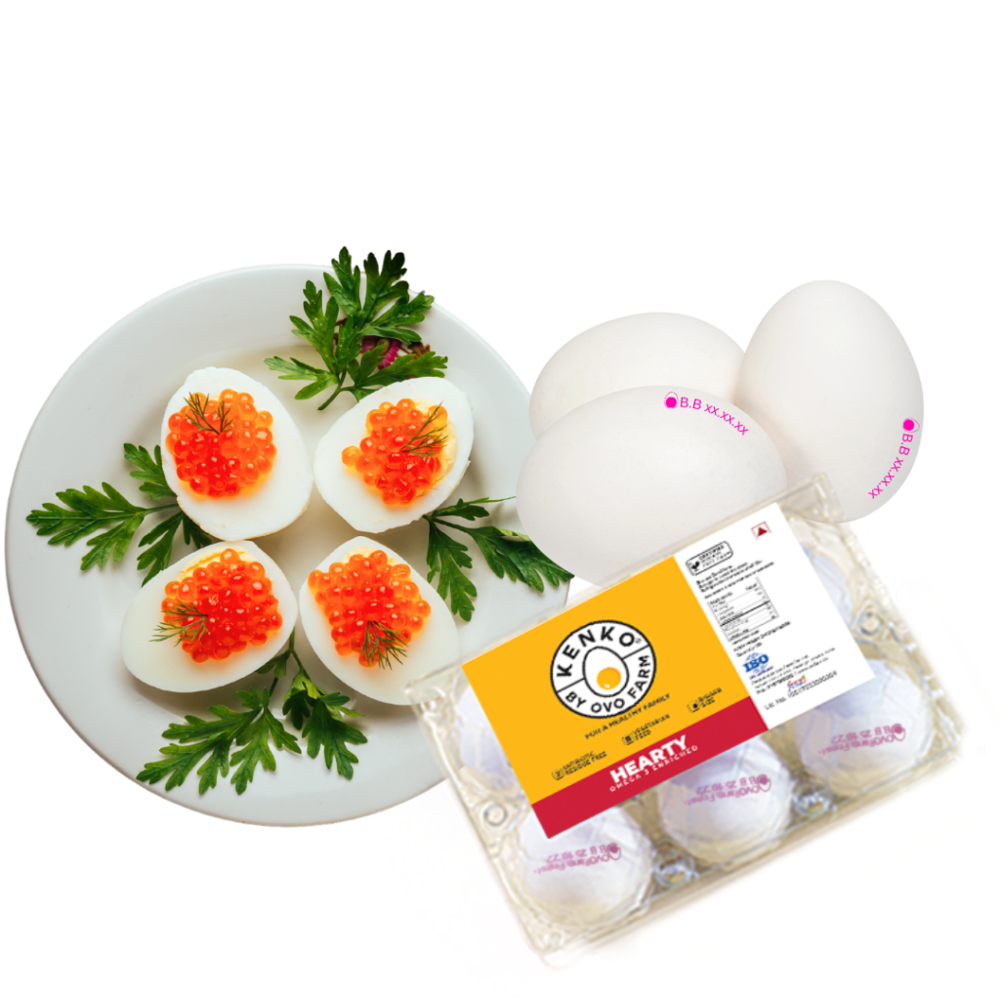
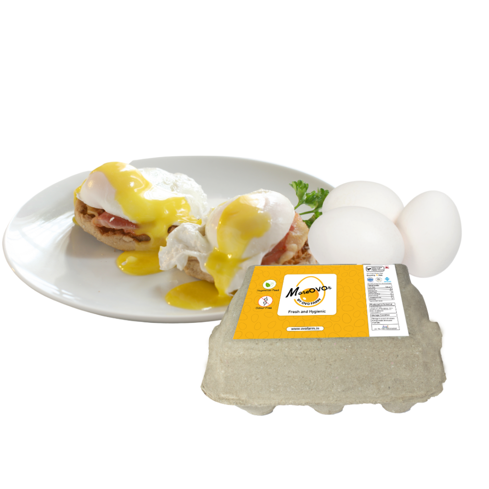
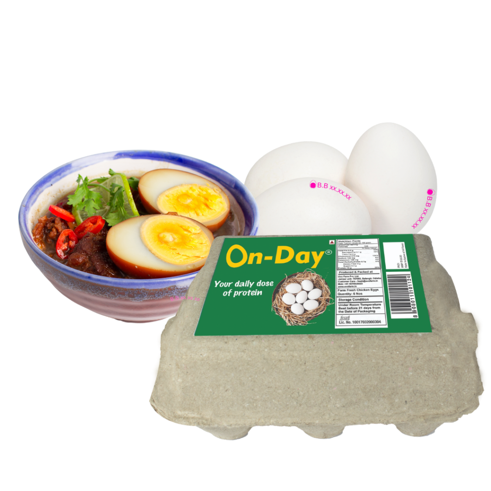

Hi-Pro
- Rich in Vitamins and Proteins.
- 15% bigger in size as compared to the normal eggs available in the market.
- Undergoes a process that helps keep eggs fresh till the expiry date
- Laid by chickens fed with vegetarian feed and antibiotics residue-free
- Fully automatic production, packaging and UV treatment to ensure eggs are hygienic and safe.
- Protein content present in Pro Eggs provides nearly 12% of the daily RDA for adults (based on ideal body weight).
- Helps in body building and repairing body tissues.


Brown
- Rich in Vitamins and Proteins.
- 15% bigger in size as compared to the normal eggs available in the market.
- Undergoes a process that helps keep eggs fresh till the expiry date
- Laid by chickens fed with vegetarian feed and antibiotics residue-free
- Fully automatic production, packaging and UV treatment to ensure eggs are hygienic and safe.
- Protein content present in Pro Eggs provides nearly 12% of the daily RDA for adults (based on ideal body weight).
- Helps in body building and repairing body tissues.
Immuno
- Enriched With SELINIUM.
- 20% bigger in size as compared to the normal eggs available in the market.
- Undergoes UV treatment and is extremely hygienic.
- It works as an antioxidant, especially when combined with Vitamin-E by scavenging free radicals.
- Laid by hens fed with vegetarian feed
- Vitamin-E is also important in the formation of red blood cells.

Hearty
- Low in cholesterol which in turn is good for the heart.
- Rich in Omega-3 Fatty acids which help in reducing the incidence of CVD, Cancer and Neurological diseases.
- Undergoes a process that helps keep eggs fresh till the expiry date
- Laid by chickens fed with vegetarian feed and antibiotics residue-free
- Fully automatic production, packaging and UV treatment to ensure eggs are hygienic and safe.
- Machine-graded bigger & uniform eggs of 60-65 gms
- Blood Pressure can be reduced minimally.
MoreOVOr
- Undergoes UV treatment and is extremely hygienic.
- Laid by hens fed with vegetarian feed.
- Have 20% more essential nutrients.
- Fully automatic production, packaging and UV treatment to ensure eggs are hygienic and safe.


On-Day
- Eggs are of superior quality.
- Neat & clean eggs with no stains.
- Undergoes UV treatment and is extremely hygienic.
- Fully automatic production, and packaging.
- Machine-graded bigger & uniform eggs of 60-65 gms
- Blood Pressure can be reduced minimally.